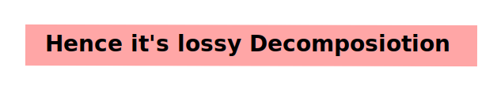

5NF
Lossless/Lossy Join Decomposition
Rule:
Check at bottom after reading the casestudy.
Case Study:
Now we normalized the table to reduce anomaly but the thing is we didn't took care of common attribute between two tables.
Let's say we get a query to get the C value where A value = ‘1’.
So the querry will look like this:
Select R2.C from R2 natural join R1
Where R1 A='1';
Now what join does is “Cross multiplication with condition” given
But now if we see in
◇ Fig (iv) we get to know that for A with val 1 gives two values of C i.e 1 and 2.
◇ Fig (i) we only get C=1 for A=1.
Since fig(iv) has 5 tuples != fig(i) has 3 tuples

~~~~~~~~~~~~~~~~~~~~~~~~~~~~~~~~~
Now here comes the Rules
→ R1 U R2 = R
→ R1 ∩ R2 !=Φ
→ Take common attribute only CK or SK of either R1 or R2 or both.
~~~~~~~~~~~~~~~~~~~~~~~~~~~~~~~~~
Now let's do it again but taking A as the common attribute.
Now again if we apply
Select R2.C from R2 natural join R1
Where R1 A='1';
We'll get the table
So we see that even after dividing the table into two it gives the correct answer to query therefore its perfect.